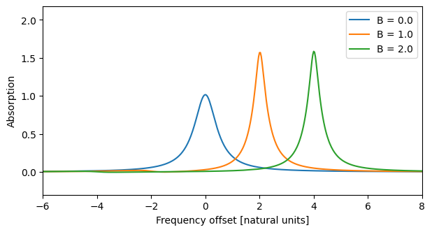
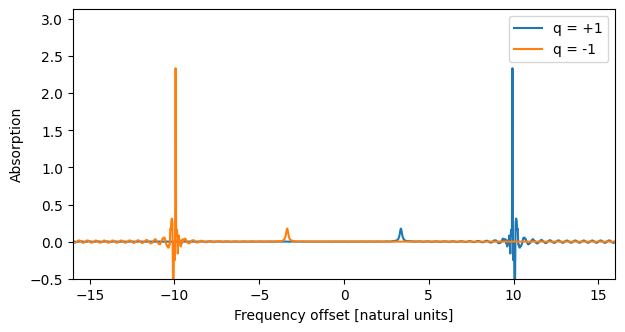

import json
import matplotlib.pyplot as plt
import numpy as np
from clerq import PropagationSolver, spectral
def problem(B):
return {
"system": {
"num_states": 2,
"decays": [{"channels": [[0, 1]], "rate": 1.0}],
"fields": [
{
"coupled_levels": [[0, 1]],
"rabi_freq": 1.0e-3,
"rabi_freq_t_func": "gaussian",
"rabi_freq_t_args": {"ampl": 1.0, "centre": 0.0, "fwhm": 0.05},
}
],
"b_field": {
"magnitude": B,
"units": "natural",
"g_F": [-0.5, 1.5],
"m_F": [1.0, 1.0],
},
},
"t_min": -2.0,
"t_max": 30.0,
"t_steps": 3200,
"z_min": -0.2,
"z_max": 1.2,
"z_steps": 20,
"interaction_strengths": [0.5],
}
def absorption_spectrum(p):
solver = PropagationSolver.from_json_str(json.dumps(p))
solver.solve(progress=False)
return spectral.freq_list(solver), spectral.absorption(solver, 0, -1)A Static Magnetic Field: the Zeeman Shift
A static magnetic field \(B\) along the quantisation axis shifts each sublevel by
\[ E_{F,m_F} = g_F \, m_F \, \mu_B B , \]
which is diagonal in the bare Hamiltonian, so it is just an extra term added to the level energies. It splits the lines of \(\sigma^+\) and \(\sigma^-\) light by different amounts, the basis of magnetometry and magneto-optical rotation.
NoteSign convention
The sign is that of Steck’s alkali data: the shift is \(+g_F m_F \mu_B B\), so the Rb87 \(5S_{1/2}\) \(F=2\) level has \(g_F=+1/2\) and its \(m_F=+2\) sublevel moves up in energy for \(B>0\). Some references (e.g. Budker et al.) define the magnetic moment with the opposite sign and tabulate \(g_F\) with the opposite sign, so check the convention when importing values.
Units. The code is in natural units, so magnitude with "units": "natural" (the default) is \(\mu_B B/h\) in the same frequency unit as energies, and the shift is \(g_F m_F B\) in that unit. If your energies are in MHz (time in microseconds), use "units": "gauss" and clerq converts with \(\mu_B/h = 1.3996\) MHz/G. The helper hyperfine.gauss_to_natural does the same conversion.
Only a scalar field along the quantisation axis is supported: no transverse fields, no other quantisation axis, and no Breit-Rabi nonlinearity (so keep \(g_F m_F \mu_B B\) small compared with the hyperfine splittings).
A two-level example
Levels are given a g_F and an m_F in the b_field block of the system. We use a ground level with \(g_F m_F = -1/2\) and an excited level with \(g_F m_F = 3/2\), so the line is shifted by \((3/2 - (-1/2))B = 2B\).
fig, ax = plt.subplots(figsize=(7, 3.5))
for B in (0.0, 1.0, 2.0):
freqs, absorb = absorption_spectrum(problem(B))
ax.plot(freqs, absorb, label=f"B = {B}")
ax.set_xlim(-6, 8)
ax.set_ylim(-0.3, None)
ax.set_xlabel("Frequency offset [natural units]")
ax.set_ylabel("Absorption")
ax.legend();
The line moves by \(2B\), as expected. Setting magnitude to 0 (or leaving out b_field) reproduces the field-free result exactly.
Hyperfine levels
For alkali atoms g_F follows from the Landé formulae. Give each LevelF the orbital angular momentum L (or the fine-structure factor g_J) and the nuclear factor g_I in units of \(\mu_B\) (Steck: \(-0.0009951\) for Rb87), and Atom1e.get_zeeman_levels() returns the g_F and m_F lists for every sublevel, ready for b_field. A level can also be given its g_F directly.
Here is Rb87 \(5S_{1/2}\,F=1 \to 5P_{1/2}\,F'=1\) with \(\sigma^+\) and \(\sigma^-\) probes. The ground level has \(g_F=-1/2\) and the excited level \(g_F=-1/6\), and the three ground sublevels are equally populated.
from clerq import hyperfine
g_I = -0.0009951
atom = hyperfine.Atom1e(element="Rb", isotope="87")
atom.add_F_level(hyperfine.LevelF(I=1.5, J=0.5, F=1, L=0, g_I=g_I)) # 5S1/2 F=1
atom.add_F_level(hyperfine.LevelF(I=1.5, J=0.5, F=1, L=1, g_I=g_I)) # 5P1/2 F'=1
print("g_F:", [round(f.g_F, 4) for f in atom.F_levels])
atom.get_zeeman_levels()g_F: [-0.5018, -0.1677]{'g_F': [-0.50182370109,
-0.50182370109,
-0.50182370109,
-0.16771726630333333,
-0.16771726630333333,
-0.16771726630333333],
'm_F': [-1.0, 0.0, 1.0, -1.0, 0.0, 1.0]}def hyperfine_problem(q, B):
p = problem(B)
coupled = atom.get_coupled_levels([0], [1])
p["system"].update(
{
"num_states": 6,
"decays": [
{
"channels": coupled,
"rate": 1.0,
"factors": atom.get_decay_factors([0], [1]).tolist(),
}
],
"initial_state": [1 / 3] * 3 + [0.0] * 3,
"b_field": {"magnitude": B, **atom.get_zeeman_levels()},
}
)
p["system"]["fields"][0].update(
{
"coupled_levels": coupled,
"factors": atom.get_clebsch_hf_factors([0], [1], q=q).tolist(),
}
)
return p
fig, ax = plt.subplots(figsize=(7, 3.5))
for q in (1, -1):
freqs, absorb = absorption_spectrum(hyperfine_problem(q, B=20.0))
ax.plot(freqs, absorb, label=f"q = {q:+d}")
ax.set_xlim(-16, 16)
ax.set_ylim(-0.5, None)
ax.set_xlabel("Frequency offset [natural units]")
ax.set_ylabel("Absorption")
ax.legend();
Each polarisation has two lines, one for each allowed pair of sublevels, at \((g_{F'} m_{F'} - g_F m_F)B\). They sit at mirror-image positions for the two polarisations, which is what makes the medium circularly birefringent. (In clerq’s convention \(q=+1\) couples \(m_F \to m_F - 1\).)
Differentiating with respect to B
With to_autodiff() (see autodiff recipes), the field is a differentiable parameter named b_field, in natural units: the bare Hamiltonian is \(H_0 = H_\mathrm{base} + 2\pi B Z\) with \(Z=\mathrm{diag}(g_F m_F)\). The shift is read from the system, so solve() and the autodiff version agree at any \(B\).
import jax
import jax.numpy as jnp
jax.config.update("jax_enable_x64", True)
p = problem(0.7)
p["t_min"], p["t_max"], p["t_steps"], p["z_steps"] = -1.0, 4.0, 60, 4
p["system"]["fields"][0]["rabi_freq_t_args"]["fwhm"] = 0.4
p["system"]["fields"][0]["rabi_freq"] = 0.5
p["interaction_strengths"] = [2.0]
solver = PropagationSolver.from_json_str(json.dumps(p))
ad = solver.to_autodiff()
def transmitted_energy(omega):
return jnp.sum(jnp.abs(omega[0, -1]) ** 2)
value, grads = ad.value_and_grad(transmitted_energy, {"b_field": 0.7})
value, grads["b_field"](Array(1.0354147, dtype=float64),
Array(0.37402203, dtype=float64, weak_type=True))